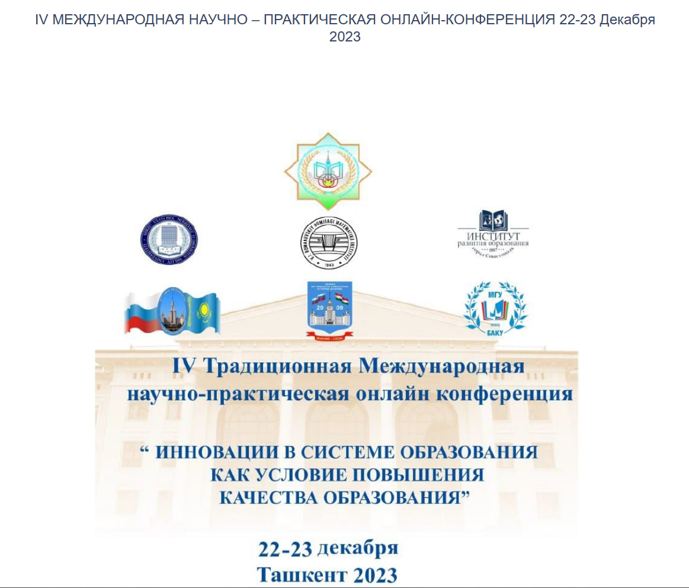

Data & AI
Data Fusion 2026: данные, ИИ и новые образовательные навыки
Редакционный обзор конференции о данных, технологиях и развитии профессиональных компетенций.
ЧитатьМы смотрим на события через темы, людей, решения и последствия для образования, исследований и публичной экспертизы.
Редакционный обзор конференции о данных, технологиях и развитии профессиональных компетенций.
Читать
В материалах фиксируются тема, источник, участники, выводы и значение события для читателя.
Пресс-центр